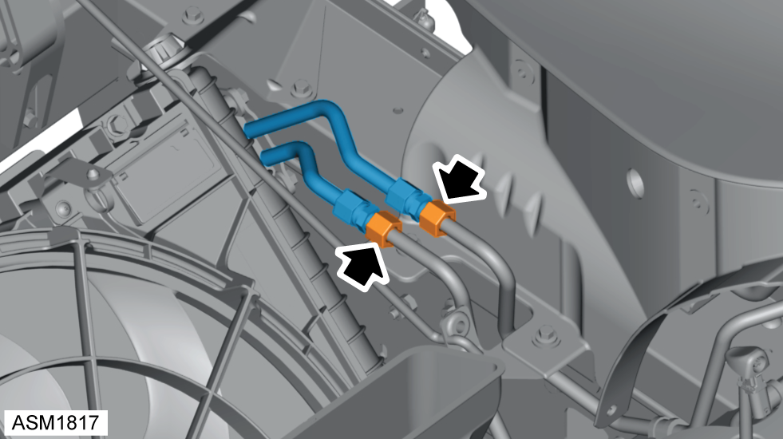
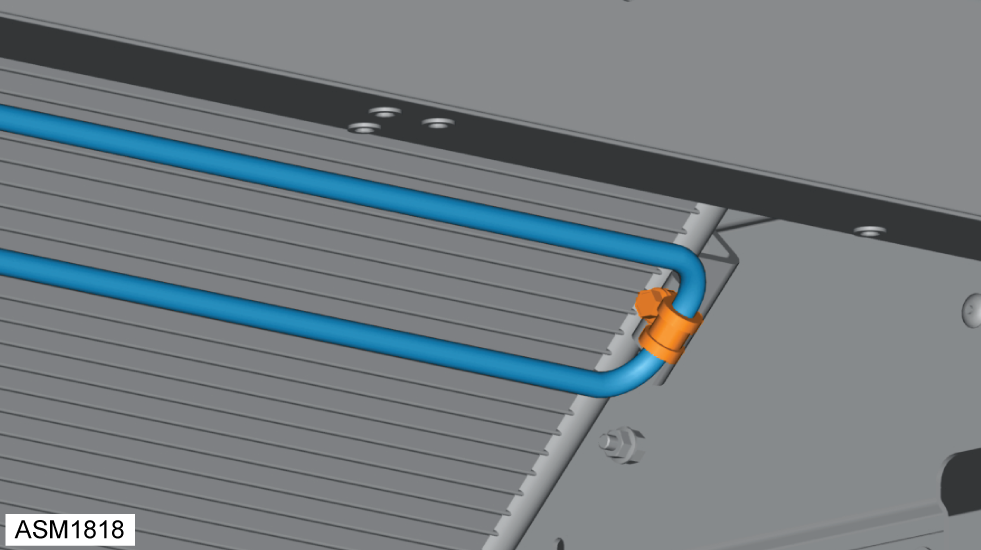
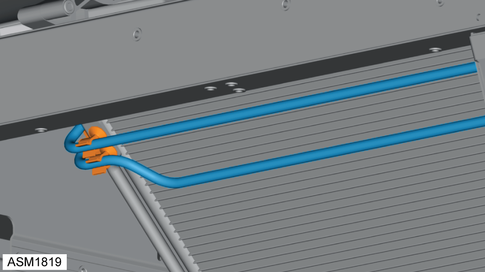

Pipe - Cooler Assembly
Print
Operation Code: 32.03.14-02
Removal
- Remove front bumper. Refer to procedure.

- Loosen union nuts (x2) securing cooler pipe to power steering fluid feed and return hoses.
- Disconnect cooler pipe from power steering fluid feed and return hoses and discard O-rings.
 WARNING: Power steering fluid is a toxic substance and can be lethal if ingested.
WARNING: Power steering fluid is a toxic substance and can be lethal if ingested.
NOTE: Drain oil into a suitable container and dispose of appropriately.

- Remove bolt securing cooler pipe to condenser.

- Release clips (x2) securing cooler pipe to condenser.
- Remove cooler pipe and drain oil.
NOTE: Drain oil into a suitable container and dispose of appropriately.
Installation
- Installation is the reverse of removal procedure except for the following:
- Renew discarded O-rings.
- Fill power steering system. Refer to technical data.
- Bleed power steering system. Refer to procedure.